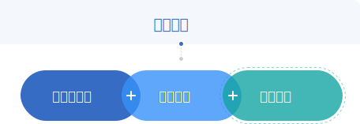
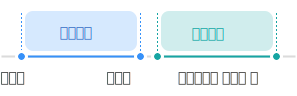

제목이 들어갑니다.
반납금납부
반납금납부에 대한 소개와 절차를 알 수 있습니다.
반납금납부
-
1. 납부방법
- 일시납부 또는 분할납부선택가능
- 분할납부를 선택할 경우 분할이자를 가산하여 납부하며, 그 납부 횟수는 60회 이내의 범위에서 연계신청인의 요청을 받아 정함
- 연계급여 수급 연령전까지 반납금을 완납할 수 있도록 횟수를 정해야 함
- 반납금은 일시납부인 경우 연계신청이 승인한 날이 속하는 달의 다음 달 말일까지 분할납부인 경우
- 2%이상 이자율이 변동되었을 때 이자액을 재산정
-
1-1. 일시납부
- 퇴직당시 지급 받은 퇴직일시금(급여의 제한이 있는 경우 제한 후 퇴직일시금, 2015.1.28. 시행) 대통령령으로 정하는 이자를 가산한 금액을 연계신청의 결과를 통지한 날 기준이 속하는 달의 다음 달 말일까지 직역연금에서 발급한 반납금 고지서의 금액을 지정 금융기관에 납부해야 함
-
1-2. 분할납부
- 분할납부 금액 : 일시 납부액에 분할납부 이자를 가산한 금액을 분할납부 횟수로 균분
- 분할납부 이자 : 접수일이 속하는 연도의 1월 1일 현재 전국은행이 적용하는 정기예금 금리중 가장 높은 금리
- 연계신청의 결과를 통지 받은 날이 속하는 달의 다음 달부터 매월 말일까지 직역연금 에서 발급한 반납금 고지서의 금액을 지정 금융기관에 납부해야 함
-
1-3. 분할 납부액 재산정 ( 영 제3조제3항
 )
)
- 접수일이 속하는 달의 이자율과 분할납부 중의 이자율의 차이가 2%p이상 되는 때에는 향후 납부할 반납금에 대하여 변동된 이자율을 적용하고 조정된 이자율과 차이가 다시 2%이상 되는 때에도 다시 조정함
-
2. 납부금액 ( 법 제8조제2항, 제3항, 영 제3조 )

-
2-1. 이자계산기간
- 퇴직급여 지급결정이 있는 날이 속하는 날의 다음 달부터 연계신청이 연금관리기관에 접수된 날(접수일)이 속하는 달까지의 개월 수(반납이자)
- 접수일이 속하는 달의 다음달부터 분할 납부가 끝나는 날까지의 개월 수(분할이자)
 -
2-2. 이자계산방법
- 회계년도별 복리로 계산
-
2-3. 이자율
- 회계년도별 복리로 계산
-
2-1. 이자계산기간
-
3. 납부방법의 변경
- 반납금 납부중 원하는 경우 연계신청 정보변경신고서에 납부변경 내용을 기재한 후 해당 연금관리 기관의 승인에 따라 변경하여 납부
-
3-1. 사유
- 반납금의 일시납부를 분할납부로 변경하고자 할 때
- 분할납부 도중 잔여반납금을 일시에 납부하고자 할 때
- 분할납부 도중 납부기간을 연장 또는 단축하고자 할 때
-
3-2. 신청방법
- '연계신청(또는 연계급여) 정보변경 신고서(각 직역연금관리기관에서 사용하는 서식 활용 가능)'에 반납금 납부 변경 내용을 기재하여 해당 연금관리기관에 신청
-
3-3. 납부방법
- 연금관리기관으로부터 변경 통보된 납부횟수 및 납부금액에 따라 납부
-
4. 반납금 납부 지연시( 영 제5조 )
- 반납금 체납시에는 연체이자를 가산함
- 연체이자 계산 기간 : 테납기간(월 단위)
- 연체이자율 : 체납기간 동안 해당 연도마다 1월 1일 현재 전국은행이 적용하는 1년 만기 정기예금 금리 중 가장 높은 금리의 2배에 해당하는 금리
-
5. 연계신청의 취하( 법 제8조 제4항 )
- 연계신청을 한 자가 반납금등의 전부 또는 일부를 6개월 이상 내지 않는 경우 연계신청을 취하하고 납부한 반납금 등을 연계신청인에게 반환해야 함( 법 제8조제2항, 제3항, 영 제3조 )
- 1. 해당 연금관리기관은 반납금등을 내지 않은 사실과 연계신청이 취하된다는 사실을 취하일 30일 전까지
- 2. 연계신청이 취하된 경우 납부된 반납금 등을 신청인에게 반환해야 함( 법 제8조제2항, 제3항, 영 제3조 )
- 3. 이 경우 반납금등을 마지막으로 납부한 날이 속하는 달의 다음 달부터 반환일이 속하는 달까지의 개월 수 에 해당 연도마다 1월 1일 현재 전국은행이 적용하는 1년만기 정기예금금리의 평균금리를 가산하여 반환
- 연계신청을 한 자가 반납금등의 전부 또는 일부를 6개월 이상 내지 않는 경우 연계신청을 취하하고 납부한 반납금 등을 연계신청인에게 반환해야 함( 법 제8조제2항, 제3항